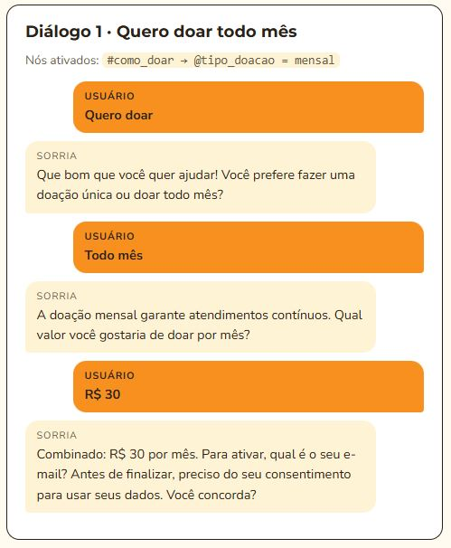

SorrIA - Assistente Virtual
O doador consegue tirar duvidas simples pelo chat da SorrIA e acionar o suporte da Turma do Bem quando necessário.
O problema
O doador precisar abrir um chamado e esperar a equipe da Turma do Bem entrar em contato para tirar dúvidas que poderiam ser respondidas de forma mais rápida.
Como funciona
- Reconhece a intenção#como_doar ou #alterar_cancelar_doacao.
- Extrai as entidadesTipo de doação, o programa ou o canal de contato.
- Responde em até 3 fraseslinguagem simples, exibindo o próximo passo.
- Escala para uma pessoaQuando o doador pede, transfere para um atendente humano.
Protótipo · dados fictícios
